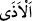
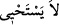

“Peygamber’i üzmekte, fakat O” sizi dışarı çıkarmaktan “utanmaktadır.” Âyetin
devamı da buna delâlet etmektedir.
“__WORD__ (üzüntü, eziyet)” insanın canına, cismine veya sahip olduğu şeylere dünyevî
yahut uhrevî bir zararın ulaşmasıdır.
“Ama Allah, hakkı söylemekten çekinmez.”
Bu da utanılıp çekinilen şeyin ashâbın bizzat kendileri olmayıp onlarla ilgili hak bir
emir olmasını gerektirir. Bu ise ancak onların evden çıkarılmalarıdır. Yâni (ey uygunsuz
davranan sahabîler!) sizin çıkarılmanız haktır. Bu yüzden utanmaktan dolayı terk
edilmemesi gerekir. İşte bu sebeple Allah Teâlâ utanıp çekinen kişinin bir işi terk etmesi
gibi bu emri terk etmeyip size Hz. Peygamber (s.a.)’in evinden (işiniz bittikten sonra)
çıkmanızı emretmektedir.
Allah Teâlâ’nın çıkma emrini vermeyi terk etmemesinin “__WORD__ (çekinmez) diye
ifâde edilmesi müşâkele[268] içindir.
Hz. Peygamber (a.s.) insanların haya duygusu en fazla olanı, tabîat olarak
hoşlanmadığı ayıp ve kusurları en çok görmezden geleni idi.
Utanma/hayâ, kerih ve sevimsiz ve nahoş bir işin yahut terk edilmesi yapılmasından
daha hayırlı olan bir işin yapılması hâlinde insanın yüzünde ârız olup meydana gelen bir
rikkat/incelik ve hassasiyettir. Râgıb şöyle demiştir: “Hayâ, nefsin çirkin iş ve kötü
şeylerden kendini toparlayıp alıkoyması ve çirkin olanı terk etmesidir.
Rivâyet edilmiştir ki: “Allah Teâlâ saçı başı ağırmış müslümana azab etmeye hayâ
eder.”[269] Bu hadîs ile hâşâ Allâh’ın daralması/sıkılması ve çekinmesi murad
edilmemiştir. Çünkü Allah Teâlâ böyle vasfedilmekten münezzehtir. Burada murad
edilen, Allah Teâlâ’nın o kimseye azab etmeyi terk etmesidir. Yine “Elbette Allah Teâlâ
hayâ sâhibidir”[270] şeklindeki rivâyetin mânâsı da çirkinlikleri terk eden ve
güzellikleri yapandır, demektir.
Sonra bu âyette başkalarına yük/bâr olan kimselere te’dîb/edeb öğretme vardır.
Ahnef der ki: “Allah Teâlâ’nın “Yemeği yediğinizde hemen dağılın” kavlinin
başkalarına yük olan kimseler hakkında nazil olmuştur. Buna göre misafir ev sahibine
yük olmamalı/ağırlık vermemeli, bilakis ziyaretini hafif/kısa tutmalıdır. Hasta
ziyaretinde bulunan kimsenin durumu da aynıdır. Çünkü hasta ziyareti bir lahza/ gâyet
kısa bir müddettir.”
A‘meş’e: “Gözlerin neden zayıf ve bulanık görür oldu?” diye soruldu. O da:
“Başkalarına yük olanlara bakmaktan.” diye cevap verdi.
Şiirde şöyle denilmiştir:
Başkalarına yük olan kimse bir topluluğun yurduna girdiğinde
Orada oturanların göç etmekten başka yapacakları bir şey yoktur.
“Yük/bâr olan kimselerle düşüp kalkmak, ruhun hummâsıdır.” denilmiştir.